Spatial Data
Data Types
There are two main types of spatial data: (1) vector data and (2) raster data.
| Vector Data | Raster Data | |
|---|---|---|
| What | Points, lines, or polygons | Spatially referenced grid |
| Common file formats | Shapefiles (.shp), geojsons (.geojson) | Geotif (.tif), NetCDF files |
| Examples | Polygons of countries, polylines of roads, points of schools | Satellite imagery |
| Vector | Raster |
|
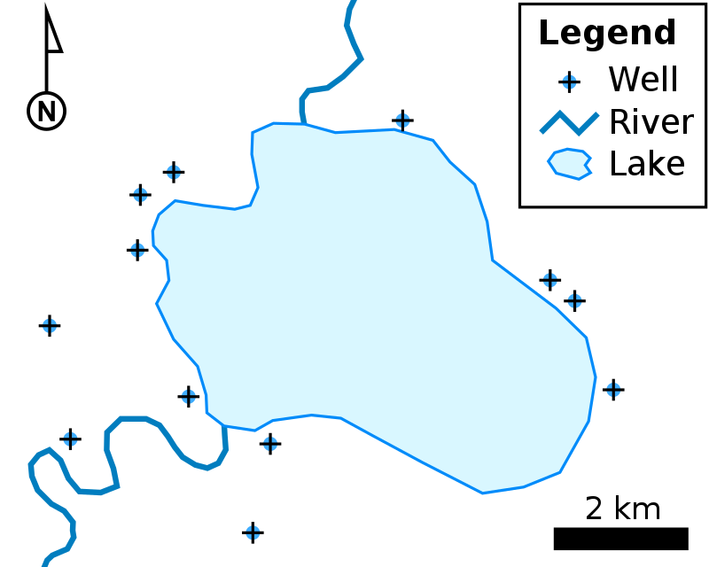 |
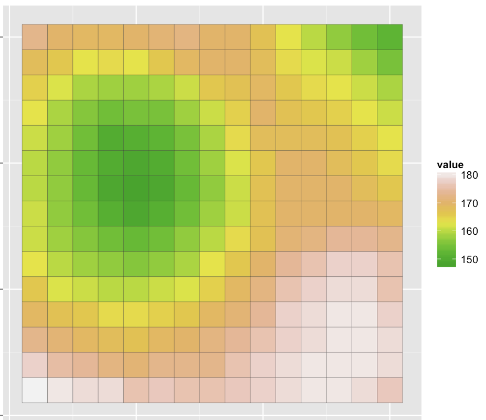 |
Coordinate Reference Systems (CRS)
Coordinate reference systems (CRS) are frameworks that define locations on earth using coordinates.
For example, the World Bank is at latitude 38.89 and longitude -77.04.
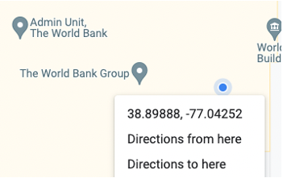
- There are many different coordinate reference systems, which can be grouped into geographic (or spherical) and projected coordinate reference systems. Geographic systems live on a sphere, while projected systems are ``projected’’ onto a flat surface.
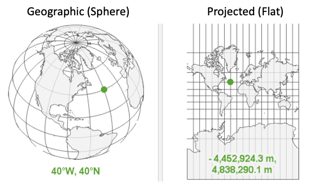
Geographic Coordinate Systems
Overview
Units: Defined by latitude and longitude, which measure angles and units are typically in decimal degrees. (Eg, angle is latitude from the equator).
Latitude & Longitude:
- On a grid X = longitude, Y = latitude; sometimes represented as (longitude, latitude).
- Also has become convention to report them in alphabetical order: (latitude, longitude) — such as in Google Maps.
- Valid range of latitude: -90 to 90
- Valid range of longitude: -180 to 180
- {Tip} Latitude sounds (and looks!) like latter
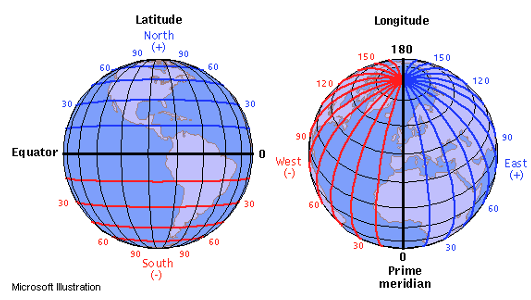
Distance on a sphere
- At the equator (latitude = 0), a 1 decimal degree longitude distance is about 111km; towards the poles (latitude = -90 or 90), a 1 decimal degree longitude distance converges to 0 km.
- We must be careful (ie, use algorithms that account for a spherical earth) to calculate distances! The distance along a sphere is referred to as a great circle distance.
- Multiple options for spherical distance calculations, with trade-off between accuracy & complexity. (See distance section for details).
|
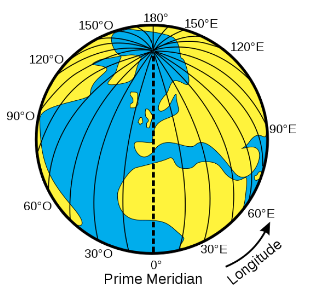 |
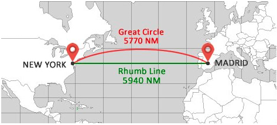 |
Datums
- Is the earth flat? No!
- Is the earth a sphere? No!
- Is the earth a lumpy ellipsoid? Yes!
The earth is a lumpy ellipsoid, a bit flattened at the poles.
- A datum is a model of the earth that is used in mapping. One of the most common datums is WGS 84, which is used by the Global Positional System (GPS).
- A datum is a reference ellipsoid that approximates the shape of the earth.
- Other datums exist, and the latitude and longitude values for a specific location will be different depending on the datum.
|
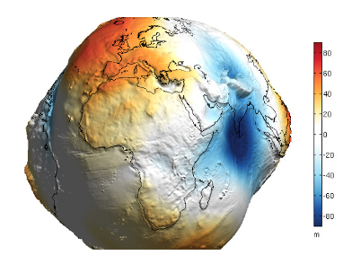 |
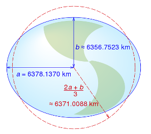 |
Projected Coordinate Systems
Projected coordinate systems project spatial data from a 3D to 2D surface.
Distortions: Projections will distort some combination of distance, area, shape or direction. Different projections can minimize distorting some aspect at the expense of others.
Units: When projected, points are represented as northings and eastings. Values are often represented in meters, where northings/eastings are the meter distance from some reference point. Consequently, values can be very large!
Datums still relevant: Projections start from some representation of the earth. Many projections (eg, UTM) use the WGS84 datum as a starting point (ie, reference datum), then project it onto a flat surface.
| Click here to see why Toby looks so confused | Different Projections |
|
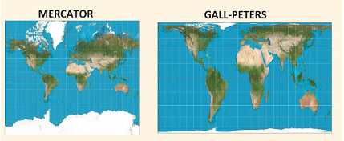 |
Referencing Coordinate Reference Systems
- There are many ways to reference coordinate systems, some of which are verbose.
- PROJ (Library for projections) way of referencing
WGS84
+proj=longlat +datum=WGS84 +no_defs +type=crs - EPSG Assigns numeric
code to CRSs to make it easier to reference. Here, WGS84 is
4326.
CRS as Units
Whenever have spatial data, need to know which coordinate reference system (CRS) the data is in.
- You wouldn’t say “I am 5 away”
- You would say “I am 5 [miles / kilometers / minutes / hours] away” (units!)
- Similarly, a “complete” way to describe location would be: I am at 6.51 latitude, 3.52 longitude using the WGS 84 CRS
Quiz
Explain what’s going on here.
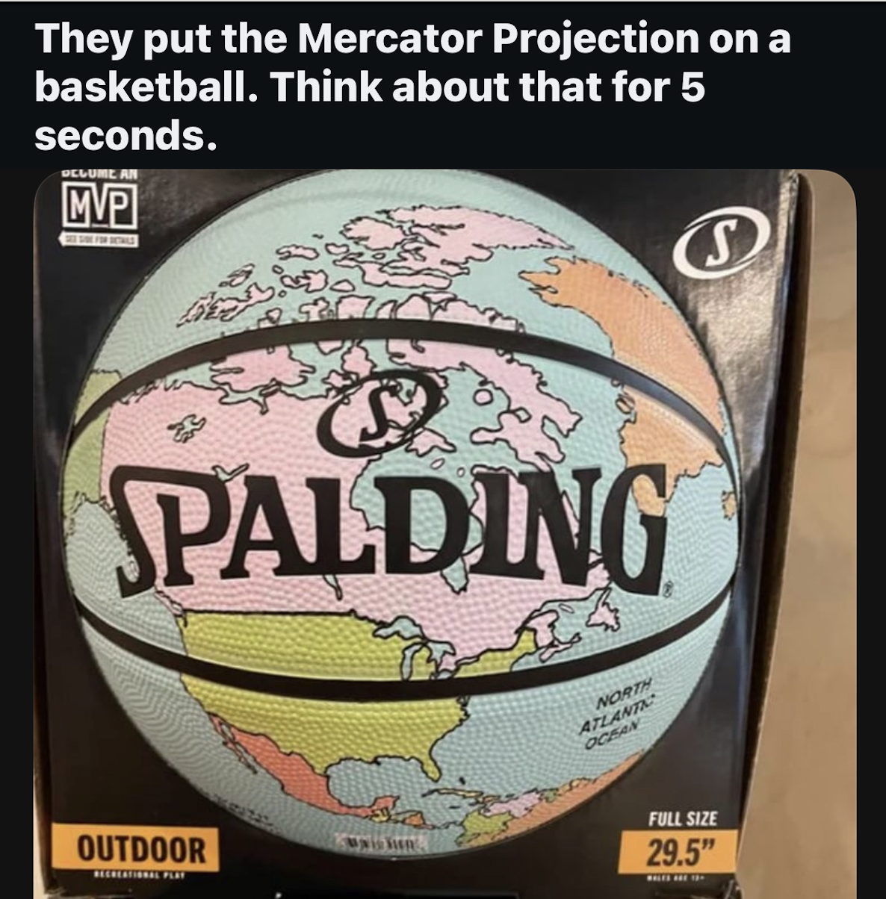
Spatial Analysis in R
Packages for spatial data
There are many packages for working with spatial data. Below summarizes some of the most commonly used packages for spatial analysis.
- sf: Package for working with vector data. (sf = simple features)
- terra: Package for working with both raster data and vector data.
- tidyterra:
Provides methods common to tidyverse for working with terra objects;
also provides additional geoms for plotting spatial data using
ggplot - leaflet R interface to leaflet, a JavaScript library for interactive maps
Before sf, the sp package was used; before
terra, the raster package was used. When
googling/asking AI about spatial data analysis in R, you may come across
these packages. Answers using these packages may be out of date. In
particular, the sp package handles spatial data notably
different than sf.
spobjects are similar toshapefiles; a shapefile isn’t one file, it’s a collection of files—one file contains the geometries (shapes), another contains the CRS, another contains the data, etc. Similarly,spfiles were a list—one item of the list contained the geometries (shapes), another item contained the CRS, etc.sfobjects are set up more similar togeojsons, where each row of the dataframe has a geometry column.
Spherical Geometry in s2
Often, spatial data comes in the WGS 84 CRS (EPSG:4326). This is a
geographic/spherical coordinate reference system where the unit of
analysis is decimal degrees. The sf package makes
it easy to compute distances and areas in terms of meters, taking into
account the curvature of the earth. For this, sf
relies on the s2
library developed by Google which facilitates quickly computing
distances and areas.
The s2 library uses a system of spatial grids and relies on great
circle distance formula for distance calculations; for more information,
see here. While the sf
package uses s2 by default, it can be turned off using
sf_use_s2(false) (but use caution when doing so).
Instead of relying on s2, there are two other common ways of computing distances/areas.
Project data: One approach is to project the data, so that the data is represented on a 2-dimensional surface and where the units are something like meters (meters are a common unit for projected CRS, but not always used; some US projected CRSs use feet). When projected, we can rely on standard formula for calculating distances/areas—such as the distance formula for distances. However, this approach requires picking a projected CRS that is accurate for the location.
Spherical Trigonometry: One approach to stay on a geographic CRS and use more advanced equations that account for being on a sphere. For example, for calculating distances, a number of great circle distance formulas exist—such as the Haversine Formula, Vincenty’s Formula, etc. The geosphere package facilitates using these. However, these formula can be slow to implement for large numbers of observations. The
s2library does rely on these formula; however, it uses them in combination with other methods.
Vector Data: Basics
Summary of functions
- read_sf(): Read spatial file
- st_crs(): Check CRS
- st_geometry_type(): Check geometry type
- st_area(): Determine area of polygon
- st_length(): Determine length of polyline
Polygons & Polylines
- geom_sf(): Used with ggplot(); plot sf objects
Load data
city_sf <- read_sf(here("data", "city.geojson"), quiet = T)Functions that work on dataframes to explore data work on sf objects
# Examine first few observations
print(head(city_sf))## Simple feature collection with 6 features and 13 fields
## Geometry type: POLYGON
## Dimension: XY
## Bounding box: xmin: 36.67803 ymin: -1.370704 xmax: 36.99025 ymax: -1.234921
## Geodetic CRS: WGS 84
## # A tibble: 6 × 14
## GID_2 GID_0 COUNTRY GID_1 NAME_1 NL_NAME_1 NAME_2 VARNAME_2 NL_NAME_2 TYPE_2
## <chr> <chr> <chr> <chr> <chr> <chr> <chr> <chr> <chr> <chr>
## 1 KEN.30… KEN Kenya KEN.… Nairo… <NA> Dagor… <NA> <NA> Const…
## 2 KEN.30… KEN Kenya KEN.… Nairo… <NA> Dagor… <NA> <NA> Const…
## 3 KEN.30… KEN Kenya KEN.… Nairo… <NA> Embak… <NA> <NA> Const…
## 4 KEN.30… KEN Kenya KEN.… Nairo… <NA> Embak… <NA> <NA> Const…
## 5 KEN.30… KEN Kenya KEN.… Nairo… <NA> Embak… <NA> <NA> Const…
## 6 KEN.30… KEN Kenya KEN.… Nairo… <NA> Embak… <NA> <NA> Const…
## # ℹ 4 more variables: ENGTYPE_2 <chr>, CC_2 <chr>, HASC_2 <chr>,
## # geometry <POLYGON [°]># Examine first few observations
head(city_sf)# Number of rows
nrow(city_sf)## [1] 17# Filter
city_sf %>%
filter(NAME_2 == "Langata")sf specific functions
# Check coordinate reference system
st_crs(city_sf)## Coordinate Reference System:
## User input: WGS 84
## wkt:
## GEOGCRS["WGS 84",
## DATUM["World Geodetic System 1984",
## ELLIPSOID["WGS 84",6378137,298.257223563,
## LENGTHUNIT["metre",1]]],
## PRIMEM["Greenwich",0,
## ANGLEUNIT["degree",0.0174532925199433]],
## CS[ellipsoidal,2],
## AXIS["geodetic latitude (Lat)",north,
## ORDER[1],
## ANGLEUNIT["degree",0.0174532925199433]],
## AXIS["geodetic longitude (Lon)",east,
## ORDER[2],
## ANGLEUNIT["degree",0.0174532925199433]],
## ID["EPSG",4326]]# Check geometry type
st_geometry_type(city_sf) %>% head()## [1] POLYGON POLYGON POLYGON POLYGON POLYGON POLYGON
## 18 Levels: GEOMETRY POINT LINESTRING POLYGON MULTIPOINT ... TRIANGLEArea is not a variable, but we can calculate it
# Calculate area
st_area(city_sf)## Units: [m^2]
## [1] 26850519 28881788 8249195 86236564 5451808 17635838 9785023
## [8] 8870678 136860370 13346547 209761656 12060332 2913663 48224035
## [15] 7227424 16949384 76175203# Add as variable
# (as.numeric removes the units)
city_sf <- city_sf %>%
mutate(area_m2 = geometry %>% st_area() %>% as.numeric())Static plot using geom_sf
ggplot() +
geom_sf(data = city_sf,
aes(fill = area_m2))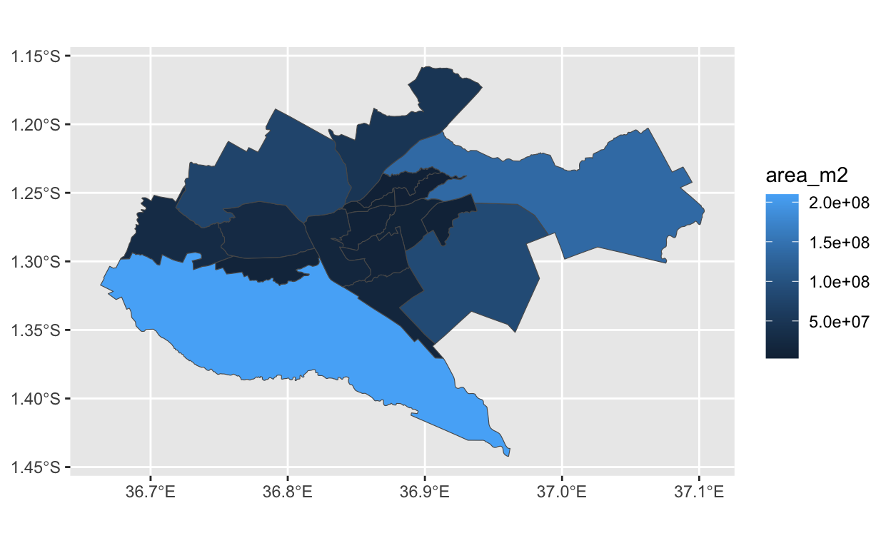
Exercise: Check the CRS & geometry typeroads_sf <- read_sf(here("data", "roads.geojson"), quiet = T)roads_sf <- read_sf(here("data", "roads.geojson"), quiet = T)Points
Here we load a csv file that has latitude and longitude information.
We can convert this to a spatial file using the st_as_sf()
function. We know from the data metadata that the data is in
ESPG:4326
gf_df <- read_csv(here("data", "gas_flaring", "finaldata", "gas_flaring_nga.csv"))## Rows: 2264 Columns: 12
## ── Column specification ────────────────────────────────────────────────────────
## Delimiter: ","
## chr (6): country, field_type, field_name, field_operator, location, flare_level
## dbl (6): latitude, longitude, bcm, m_mscfd, year, flaring_vol_million_m3
##
## ℹ Use `spec()` to retrieve the full column specification for this data.
## ℹ Specify the column types or set `show_col_types = FALSE` to quiet this message.head(gf_df)gf_sf <- gf_df %>%
st_as_sf(coords = c("longitude", "latitude"),
crs = 4326)
head(gf_sf)Vector Data: Spatial Operations
Spatial Operations on 1 Dataset
Spatial Operations on > 1 Dataset
Raster Data